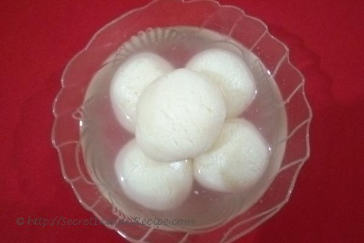

Rasagola

DESCRIPTION
Rasagola, also known as rasgulla, rosogola or rosogolla, is a syrupy dessert popular in the eastern Indian states of West Bengal and Odisha. It is made from ball-shaped dumplings
of chhena and semolina dough, cooked in light sugar syrup made of sugar. This is done until the syrup permeates the dumplings.
Chhena or chhana (Bengali pronunciation) are a style of cheese, originating from the Indian subcontinent, made from water buffalo or regular cow milk
by adding food acids such as lemon juice and calcium lactate instead of rennet, and, straining the whey through filtration.
FUN FACT: West Bengal and Odisha have disputed with each other over the origins of Rasagola for many years. As of 2019, the dispute got settled as the Government of India
granted Geographical Indication status to the regional variants of the Rasagola - Banglar Rosogolla and Odia Rasagola.
Ingredients
- Milk - 1 litre
- Sugar - 2 cups
- Cardamom powder - 1 tablespoon
- Lemon juice
- All purpose flour - 1 tablespoon
- Rose water - Half tablespoon
STEPS
Making of Chhena
- Heat milk in a pan over medium flame and bring it to boil for about 10 minutes.
- Add lemon juice to it and stir it well.
- Chhena (whey) will separate out. Turn off the flame when you see clear water.
- Let the contents of the pan cool. After being cooled, drain off the water and put chhena over a muslin cloth.
- Wash the chenna thoroughly with clean water to remove the smell of lemon.
- Strain the chhena through the muslin cloth. Tie a knot on the muslin cloth.
- Leave the chhena inside the knotted muslin cloth for 4-5 hours or overnight for proper straining.
- Chhena is ready to be eaten (or, to be used for other purposes).
Making of Rasagola
- Put chhena in a container. Add flour and cardamom powder to it.
- Knead the mixture till it is softened and smoothed.
- Make small balls from the kneaded mixture.
- Mix 2 cups of water and 2 cups of sugar, cardamom powder and rose water in a pressure cooker.
- Put the balls made from the kneaded mixture into the pressure cooker as well.
- Cook the balls for 30-45 minutes over a low to medium flame.
- After two whistles, turn off the flame.
- Serve the Rasagola after cooling it down.
Go to: